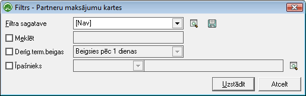
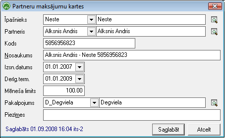
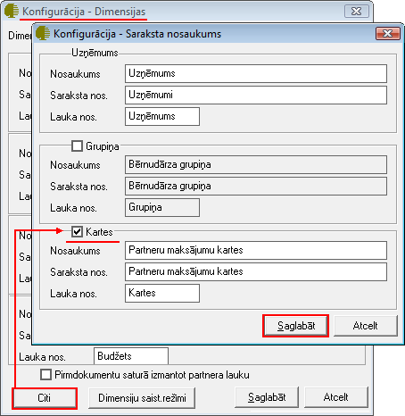
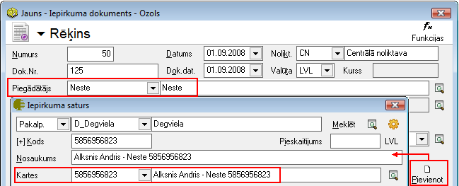

Maksājumu kartes¶
Sarakstā tiek saglabātas katra Partnera aprakstam piesaistītās maksājumu, degvielas, u.c.kartes.
Lai atlasītu dokumentus, jāizmanto datu atlases filtrs. Dati uz ekrāna tiek parādīti atbilstoši norādītajiem datu atlases kritērijiem filtra ekrāna formā. Rīku joslā nopiežot pogu.. image:: images_ozols/24535.gif :scale: 100% (Ctrl+F), tiek atvērts filtra logs:
- scale
100%
Derīg.term.beigas : Iespēja atlasīt datus par kartēm, pēc ievadītā derīguma termiņa (attiecībā pret tekošās dienas datumu);
Īpašnieks : Iespēja atlasīt datus pēc partnera maksājuma kartes Īpašnieka;
Lai Dokumentu žurnālā datus atlasītu pēc izvēlētajiem datu atlases kritērijiem, pēc filtra iestādījumu aizpildīšanas, jānospiež poga .. image:: images_ozols/25944.png :scale: 100% .
Partnera maksājumu kartes pievienošana¶
Partneru maksājumu kartes tiek pievienotas:
1.:doc:Partnera<312> aprakstā caur pogu .. image:: images_ozols/25716.png :scale: 100% ;
2. Atrodoties:doc:Partneru maksājumu karšu sarakstā<651> , rīku joslānospiežot pogu.. image:: images_ozols/25605.png :scale: 100% :
- scale
100%
Īpašnieks: Nepieciešams no Partneru sarakstaizvēlēties maksājuma kartes īpašnieku (kartes izsniedzēju);
Partneris: No Partneru saraksta jānorāda maksājuma kartes turētājs (kuram karte ir izsniegta);
Kods: Kartes kods
Nosaukums: Maksājuma kartes nosaukums (veidojas automātiski no izvēlētā Partnera nosaukuma - Īpašnieka nosaukums + kartes kods) - nepieciešamības gadījumā, izdzēšot tekstu, lauku iespējams aizpildīt arī manuāli;
Izsn.datums: Partnera maksājuma kartes izsniegšanas datums;
Derīg.term.: Partnera maksājuma kartes lietošanas derīguma termiņš;
Mēneša limits: Uzņēmumā noteiktais summas limits (informatīvs lauks, kas sniedz tikai informatīvu informāciju par noteiktajiem ierobežojumiem) pakalpojumu izmantošanai no norādītā kartes īpašnieka;
Pakalpojums: Iespēja norādīt Pakalpojumu , kas saistīts ar šo Partnera maksājuma karti un Kartes īpašnieku.

- scale
100%
Lai maksājumu kartes varētu izmantot ne tikai informatīvi - informācijas iegūšanai par uzņēmuma darbiniekiem piederošajām kartēm, bet arī kā datu uzskaites dimensiju, lai iegūtu detalizētas atskaites par veiktajiem darījumiem saistībā ar kartēm, sadaļā Konfigurācija->Iestādījumi->Kopīgie->:doc:Dimensijas<701> ->Citi, nepieciešams norādīt, ka tiks izmantota dimensija “Kartes”:
- scale
100%
- scale
100%
Pie nosacījuma, ja Dimensiju iestādījumos būs atzīmēta izvēles rūtiņa “Kartes”, Iepirkuma dokumentā Virsrakstā norādot Partneri i, kurš ir norādīts kā Īpašnieks kādai no pievienotajām maksājuma kartērm, pievienojot Iepirkuma dokumenta satura ierakstu, tiks attēlots papildus lauks “kartes”, kur no izvēlnes tiks piedāvāta iespēja norādīt kādu no pievienotajām Partnera maksājumu kartēm:
- scale
100%
Šādā veidā iespējams nodrošinā detalizētu uzskaiti par katru kartiindividuāli, no atskaites:doc:Dimensiju apgrozījums<648> , iegūstot informāciju par Iepirkumu dokumentiem Kartes dimensijas griezumā.
Nospiežotpogu .. image:: images_ozols/25621.png :scale: 100% , ieraksts tiks pievienots datu bāzei.
Visas partnerim pievienotās kartes tiek saglabātas Partneru maksājumu karšu sarakstā .